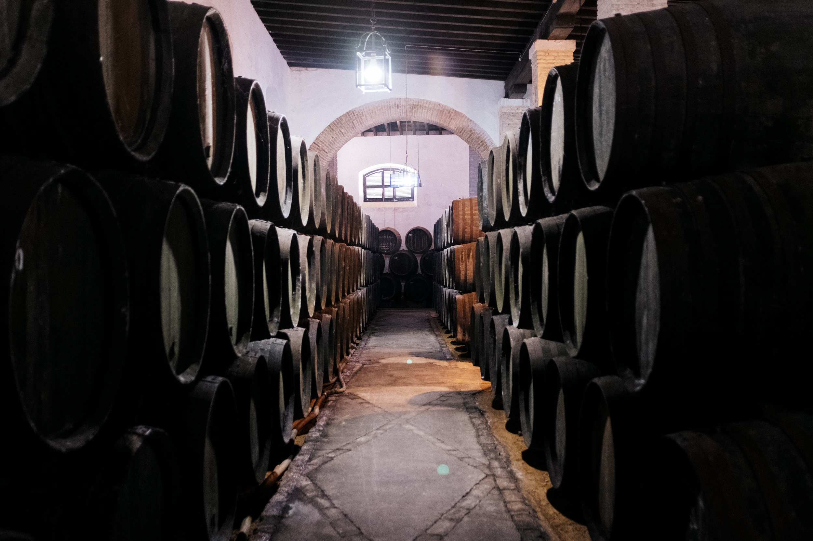
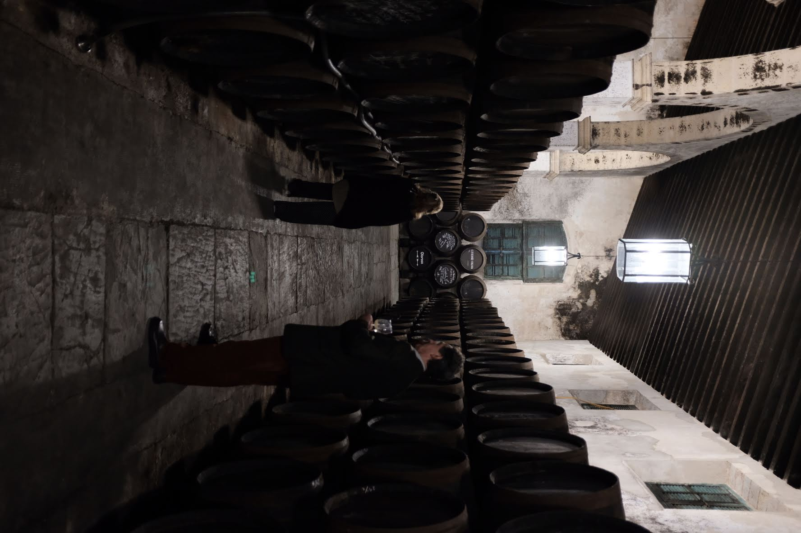
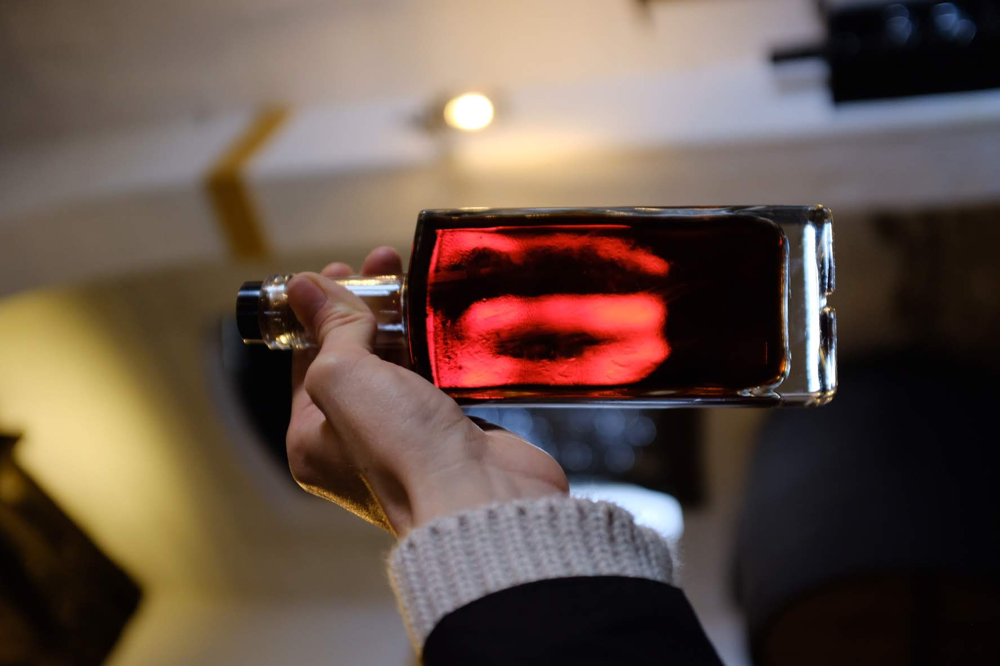

Elevate your rum in historic sherry barrels — enhancing natural cane character with rich, sophisticated complexity.
Request a QuoteAs one of the world’s most beloved spirits, rum finds new depth and dimension in sherry barrels — achieving what no other cask can. They provide an exceptional foundation for crafting complex, layered profiles that set aged expressions apart.
Each style of sherry cask imparts distinct organoleptic characteristics, offering a versatile palette for shaping rum's sensory experience. From enhancing natural estery and fruity notes to adding sophisticated oxidative complexity, sherry barrels create the depth that defines world-class rum.

Each type of sherry cask offers unique contributions to rum development, from preserving natural character while adding refinement to creating bold, complex expressions. Discover how different sherry barrels transform your rum.
Aged by the sea in Sanlúcar de Barrameda, these barrels offer unique maritime influence. Enhances rum's inherent character while adding delicate oceanic notes and sophisticated mineral complexity.
Biologically aged under flor, Fino barrels introduce subtle saline, yeasty, and aldehydic elements. Perfect for preserving rum's natural estery and fruity notes while adding green almond and delicate brine complexity.
Partial biological and oxidative aging delivers perfect balance of brightness and depth. Enriches rum with nutty, toasted almond, and light caramel notes while enhancing mid-palate roundness.
Fully oxidative and rich in polyphenols, these barrels profoundly deepen rum's flavor profile. Infuse walnut, dark chocolate, caramel and toasted tobbaco notes while creating velvety mouthfeel and warming finishes.
The rare hybrid style brings exceptional complexity, combining Amontillado finesse with Oloroso richness. Creates sophisticated rum with elegant citrus peel, dried fruit, and delicate toffee layers.
Intense sweetness and oxidative richness dramatically transform rum. Impart deep raisin, date, molasses, and dark honey notes while enhancing natural sweetness and creating luxurious viscosity.
Using sherry barrels for rum maturation goes beyond simple flavor addition—it fundamentally enhances textural complexity, ester integration, and aromatic evolution through sophisticated chemical interactions.
Rum's rich congeners interact with sherry cask extractives, creating a broad spectrum of flavor and aroma compounds that develop sophisticated profiles over time.
Extended contact with sherry-seasoned wood allows rum esters to evolve and integrate, creating the harmonious complexity that distinguishes premium aged rum.
Sherry cask compounds enhance rum's natural viscosity and mouthfeel, creating the luxurious texture that characterizes world-class aged expressions.

Find answers to the most common questions about our premium sherry barrels for rum maturation.
Sherry casks elevate rum with layers of complexity that ex-bourbon or virgin oak can't replicate. Seasoned with authentic DO-certified Sherry wine in Jerez, Solera Casks add complex fruity, nutty, and oxidative characteristics that complement rum's natural molasses and cane-derived flavors, while the biological and oxidative aging processes create compounds that enhance its natural esters. The result is a spirit of remarkable balance and depth — highlighting rum's best qualities and transforming it into a truly premium expression that stands apart from standard aged rums.
Optimal aging times depend on the rum style, climate, and desired profile. For finishing applications, 6-18 months can add significant character. For longer aging, in tropical climates, 3-8 years can produce exceptional results due to accelerated maturation. In temperate climates, 8-15+ years may be optimal. Oloroso and PX casks work well for longer aging, while Fino and Manzanilla are excellent for shorter periods. We are happy to provide specific guidance for your location and goals.
Yes, different sherry cask types work well with different rum styles. Fino and Manzanilla casks are excellent for white rum finishing, adding complexity while preserving clean character. Amontillado works well for both light and dark rums, providing balanced enhancement. Oloroso and PX casks are ideal for dark rum and long-term aging, creating rich, complex expressions. We help you select the right cask type based on your specific rum style and target profile.
Ready to elevate your rum? Connect with us for personalized recommendations and sherry barrel solutions.